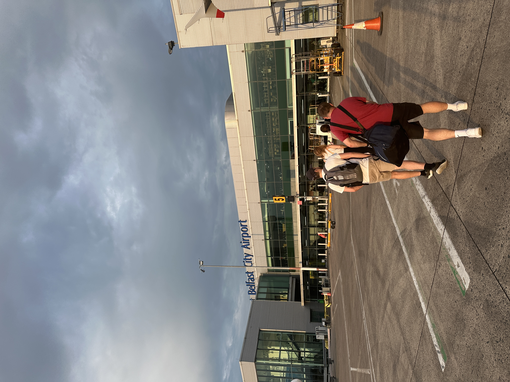
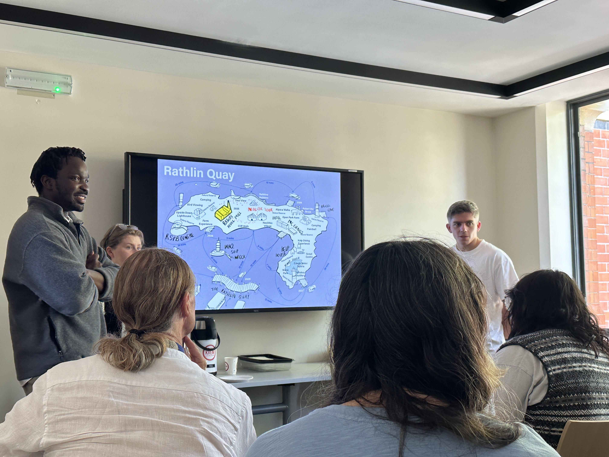
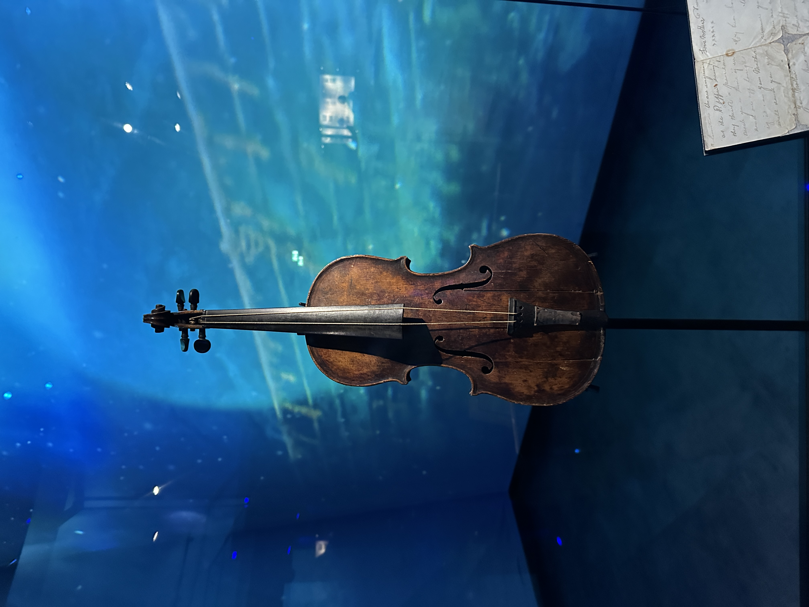

忌々しいコロナ禍がようやく一定の終息を迎え(?)、国際学会もようやく対面で開催されるようになってきました。 来週からロンドンでCUPUMが開催されます。 これに先立ち、かつての共同研究者が北アイルランドのベルファストにいるので、寄り道をしてみた、という訪問記です。
ロシアとウクライナの戦争のため、羽田からヒースローまで15時間。 エコノミークラスで15時間のフライトは、いくら20代とは言えきついもの。 しかもその後、British Airwaysの小さな機体(A320)に1時間揺られながら、ベルファストを目指さなければなりません。 そこで今回編み出した長距離フライト攻略法が「ドラマの一気見」です。 映画ではダメなんです。映画を何本も見ると疲れちゃいます。 でも同じストーリーで進むドラマなら、何本でも見れちゃう、そしてあっという間(?)に目的地に到着します。 そんなこんなであっという間にベルファストに到着で、ホテルで長旅の休息をとります。

今回訪ねるのはQueen's University Belfastという大学にいる、Prof. Greg KeefeとDr. Sean Cullenです。 かつて、私の指導教授である厳先生が主宰していた国際共同研究M-NEXで知り合った旧知の仲です。 M-NEXの最終年度にコロナ禍が重なり、結局オンラインで終わったため、5年ぶりの再会となりました。
6月のベルファストは思っていたより暖かく、散歩日和ということもあって、Seanにキャンパス周辺を案内してもらいました。 Queen's University Belfastのキャンパスには、Botanic Gardensという植物園が併設されています。 19世紀に作られた庭園で、綺麗な温室もあり、なかなか趣があります。 その後、すぐ近くにあるアルスター博物館へ。 北アイルランドの自然史から歴史、美術まで幅広くカバーしている博物館です。 北アイルランドとイングランド、プロテスタントとカトリックに関する複雑な歴史について、わかりやすく説明してもらいました。 5年分の話をするには時間が足りませんでしたが互いの近況報告などをし、旧交をあたためました。
午後からは、GregとSeanの研究室が主催するデザインワークショップの報告会に参加しました。 ちょうど最終日だったようで、タイミングが良かったです。 学生や若手研究者が地域の社会課題に対する解決策を提案し、それを地元の企業やNPOの方々と一緒に議論する、というスタイルのワークショップだったようです。 質疑応答にも参加させてもらい、北アイルランドの社会課題に対する興味深い提案を聞くことができ、刺激的な一日となりました。 その後PUBに移動して、研究者や地元コミュニティで活躍する方々と新しい関係を築くことができたのも、イギリスらしくて良い体験でした。

ベルファストと言えば、タイタニックが造船された場所でもあります。 市内にはタイタニックミュージアムもあるので、ロンドンに戻る前に、足を運んでみました。 中には、映画タイタニックでも描かれていた、沈没の直前まで演奏を続けた弦楽四重奏のバイオリンも展示されています。
